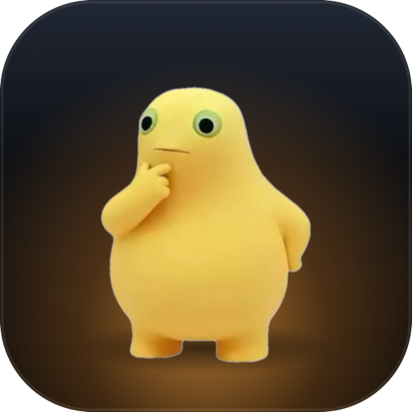
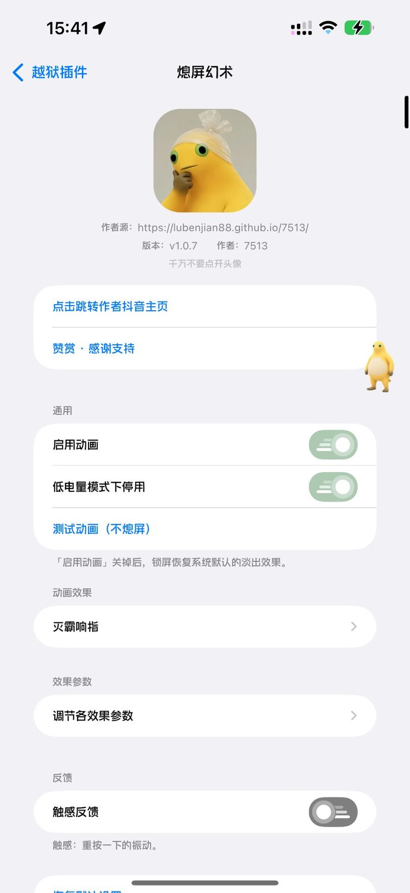
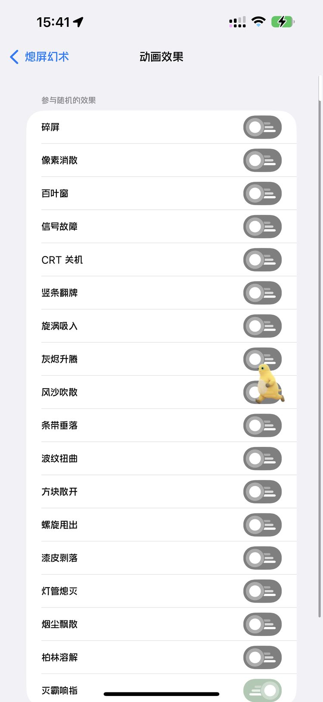
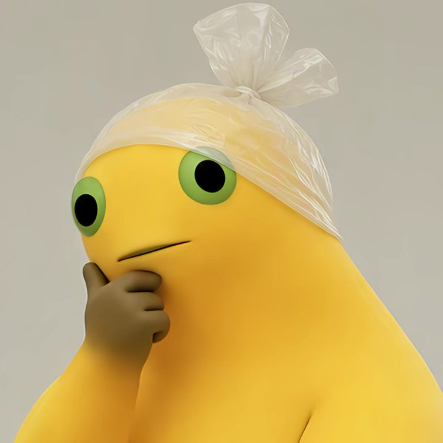

熄屏幻术 FadeCraft
18 种熄屏 / 锁屏动画，每种可单独调参
v1.0.5截图



效果
功能
- 按电源键的瞬间，把真实画面打碎、吹散或溶解
- 可勾选多种效果，每次熄屏随机播放（不会连续重复）
- 每种效果都能单独调整：时长、颗粒大小、力度、条数
- 颗粒最细可到 2 px，接近像素级溶解
- 支持「测试动画（不熄屏）」，不锁屏也能预览
- 低电量模式下可自动停用；关掉开关即恢复系统淡出
关注
信息
- 版本
- 1.0.5
- 作者
- 7513
- 标识
- com.cracklock.7513
- 支持系统
- iOS 15 – 17.3.1（roothide / rootless）
更新日志
1.0.5最新
- 新增「柏林溶解」：逐像素溶解，颗粒最细 2 px
- 新增「灭霸响指」：从右下角扫过，化灰后随风飘散
- 「动画效果」改为多选，勾选多种后随机播放
- 参数调节拆成两级页面，每种效果独立参数
- 修复熄屏后内存持续增长
- 修复锁屏未解锁时不播放动画
- 优化按下电源键到动画开始的延迟
1.0.4
「动画效果」列表与「参数调节」拆分为两个独立页面。
1.0.3
修复 SpringBoard 内存持续增长导致的卡顿、锁屏后无动画。新增动画效果白名单随机播放。
1.0.2
修复横屏，新增随机效果。
1.0.1
首个版本：16 种熄屏动画，可单独调参。